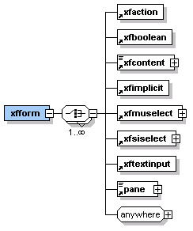

In XDIME the xfform element creates a form with extended functions. The contained elements define input, select and action controls in the form. MCS provides for form fragmentation for small displays, user input validation, and help and prompt features for protocols that support them.

You define the layouts and themes for a form in the policy editors. Then you bind the layout to the form in XDIME.
<xfform name="download"
method="get" action="download.xml">
<xfsiselect name="select"
caption="Choose platform"
initial="windows">
<xfoption caption="Windows" value="windows"/>
<xfoption caption="Mac OS X" value="mac"/>
<xfoption caption="Linux" value="linux"/>
<xfoption caption="Eclipse" value="eclipse"/>
</xfsiselect>
<xfaction type="submit" caption="Download"/>
</xfform>
Note: WML does not permit tables inside forms. If you want a form to be correctly rendered on all devices, you should arrange panes in a single column grid in the Layout editor
You can use the xfupload element in a form to upload images or other binary data. The element results in markup only on HTML forms, rendered like the xftextinput element, because there is no way to specify binary file uploads in other protocols.
Related topics
Working with XDIME
Styling forms
Using form fragments
Validating form input
Form help and prompts
Clearing WML variables in forms